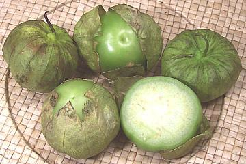

Tomatillo

[Mexican Green Tomato, Mexican Ground Cherry, Husk Tomato, Jamberry,
Tomate de Cascara, Tomate de Fresadilla, Tomate Milpero, Tomate Verde,
Miltomate, Physalis ixocarpa alt Physalis philadelphica]
Tomatillos are a nightshade native to Mexico and were well developed as
a crop by the Aztecs. Our first evidence of cultivation is from around
800 BCE but it was probably grown far earlier than that.
Tomatillos are harvested when medium to light green and used at that
stage of ripeness. The variety commonly sold in Southern California is
yellow when fully ripe but there are varieties that ripen to red and
purple. Much used in Mexican green sauces tomatillos are both tart and sweet.
There is no satisfactory substitute.
The photo specimens are typical, averaging around 2-1/4 inches diameter
and 2-3/4 ounces, but they can be much smaller in some markets. The largest
I've seen was 3-1/3 inches diameter and 6-5/8 ounces.
More on Physalis - Husk Tomatoes.
Tomatillos are pleasant enough eaten raw, but they are much more
commonly cooked into green sauces (salsa verde), for which they are an
essential and irreplaceable ingredient. Fortunately they are now so
common in the U.S. lack of a substitute is no longer a problem.
Buying:
Buy fruit that is firm and dark to medium green.
Fully ripe fruit looses the tartness that is essential to tomatillo sauces.
The husks should be just starting to fade or be rather faded but not be
too dried up - the photo specimens are typical of sound commercial
product.
Storage:
If the fruit is purchased in good condition it can
be kept at room temperature for 5 days or so. For longer storage the husks
should be stripped off and the fruit refrigerated (plastic bags are OK) and
it will keep up to 2 weeks. They also freeze well.
Prep:
Remove the husks and wash the fruit which will be
found to be a bit sticky. Cut out the stems, but tomatillos are never
peeled so I haven't bothered investigating peeling methods.
ns_tomatilz 071104 - www.clovegarden.com
©Andrew Grygus - agryg@aaxnet.com - All photos not
otherwise credited are © cg1 -
Linking to and non-commercial use of this page permitted